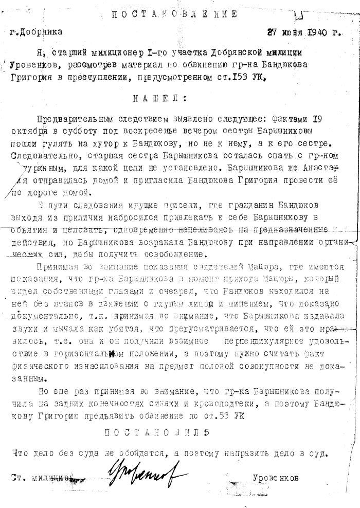
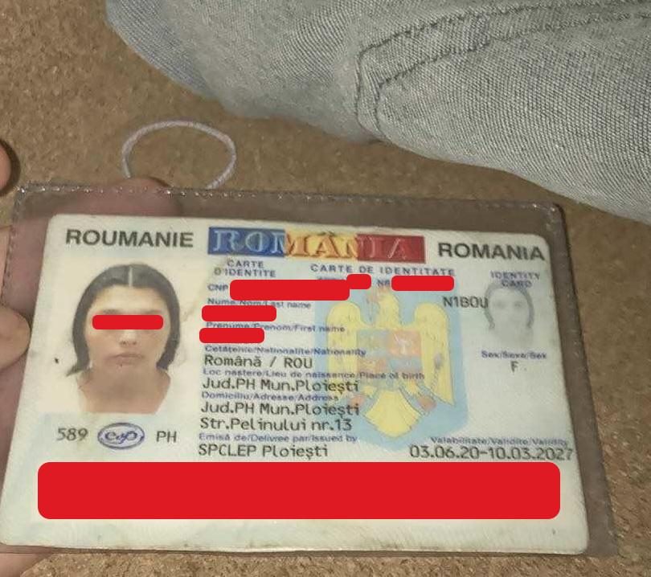

LLM или OCR?
Какой инструмент лучше подходит для задачи? В основном это зависит от типа данных, с которыми вы собираетесь работать.
В качестве примера я приведу два случая из своей практики.
Случай 1: Распознавание полей документа из цифровых файлов
Что требовалось клиенту:
- Извлечь информацию из документа, представленного в виде изображения (JPEG).
- Весь процесс извлечения данных должен был выполняться локально.
Изображение ниже — это пример файлов, с которыми мне приходилось работать. Это не реальный файл из проекта, но его формат очень близок к оригиналу:
Я не буду подробно рассказывать, как была решена эта задача, так как это описано в этой статье.
Мы видим, что в данных отсутствуют искажения. Также нет дополнительного контекста, который необходимо учитывать (об этом подробнее далее в статье). Поэтому здесь уместно использовать OCR-модель.
Случай 2: Распознавание полей документа с фотографии
Один из моих клиентов разрабатывал KYC-систему, в которой одним из этапов было извлечение данных с фотографии документа, загруженной пользователем.
Что требовалось клиенту:
- Извлечь информацию из документа в виде фотографии.
- На тот момент они использовали Gemini 1.5 Pro через API-запросы, но им нужно было локальное решение, желательно с минимальной нагрузкой на GPU.
Следующее изображение — пример пользовательской фотографии документа:
Сразу можно отметить потенциальные проблемы при попытке использовать OCR-модель для обработки такого изображения:
- Документ может быть деформирован или плохо виден (на примере выше он находится в прозрачной обложке).
- Качество фотографии может быть низким.
- Могут быть посторонние элементы, мешающие распознаванию. Например, документ может лежать на листе бумаги с текстом.
- Пользователи не всегда загружают идеальные снимки: изображение может быть повернуто, засвечено вспышкой, частично закрыто и т.д.
- Помните, я упоминал контекст? В этом случае нужно не только извлечь данные, но и, например, определить, является ли документ поддельным, есть ли в нём пропущенные поля, заполнен ли он вручную или в электронном виде.
Учитывая все эти факторы, LLM здесь будет более подходящим выбором.
Итог
OCR-модель следует использовать, если:
- Изображения однотипны и мало отличаются по структуре и оформлению.
- Единственная задача — извлечение данных (технически OCR может быть частью архитектуры MoE, но в данном случае мы выбираем инструмент, покрывающий все необходимые задачи).
LLM следует использовать, если:
- Изображения содержат искажения.
- Извлечение данных — лишь одна из нескольких задач.